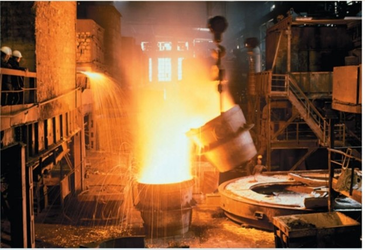
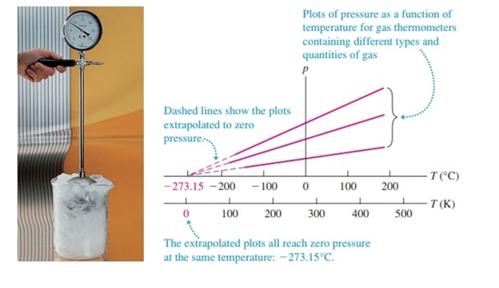

Lesson 3
TEMPERATURE AND HEAT
Temperature and Thermal Equilibrium
The concept of temperature is rooted in qualitative ideas of “hot” and “cold” based on our sense of touch. A body that feels hot usually has a higher temperature than a similar body that feels cold. That’s pretty vague, and the senses can be deceived. But many properties of matter that we can measure depend on temperature. The length of a metal rod, steam pressure in a boiler, the ability of a wire to conduct an electric current, and the color of a very hot glowing object—all these depend on temperature.
Temperature is also related to the kinetic energies of the molecules of a material. In general this relationship is fairly complex, so it’s not a good place to start in defining temperature. It is important to understand, however, that temperature and heat can be defined independently of any detailed molecular picture. In this section we’ll develop a macroscopic definition of temperature.
The principle of a gas thermometer is that the pressure of a gas at constant volume increases with temperature. A quantity of gas is placed in a constant volume container and its pressure is measured by one of the devices described. To calibrate a constant-volume gas thermometer, we measure the pressure at two temperatures, say and plot these points on a graph, and draw a straight line between them. Then we can read from the graph the temperature corresponding to any other pressure.